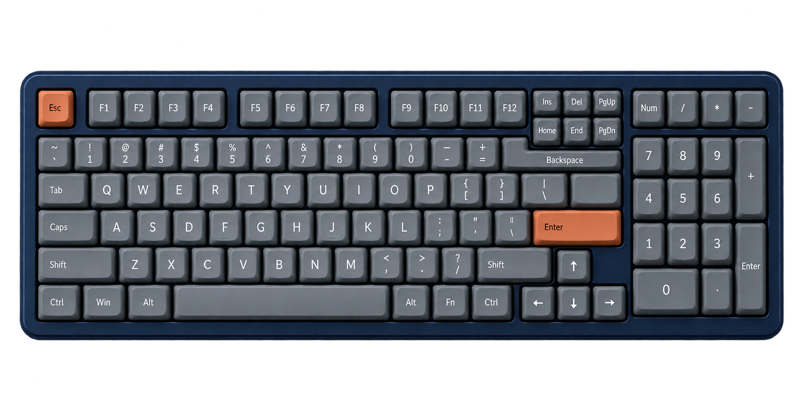
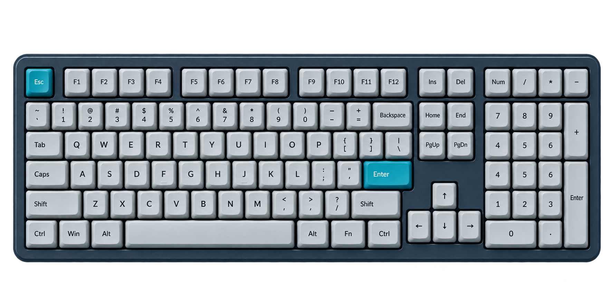
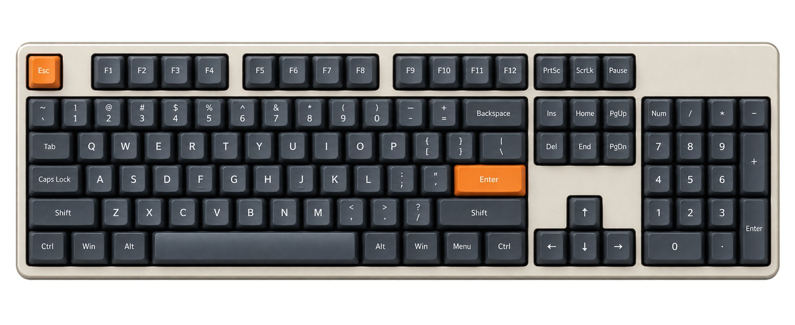
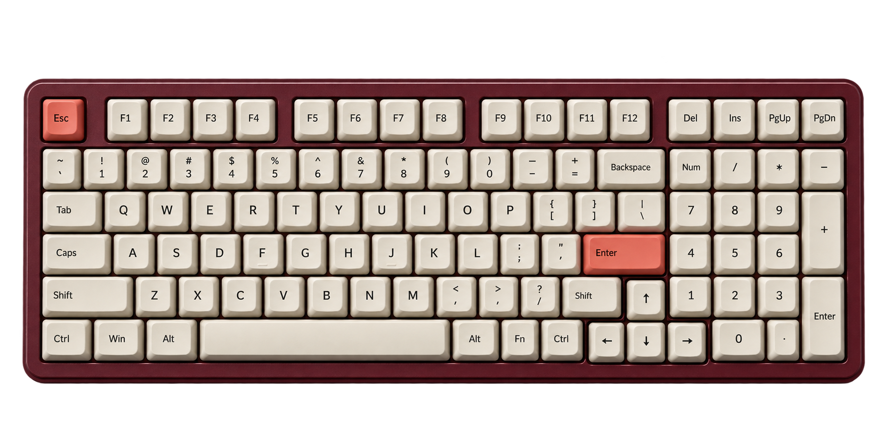

<!doctype html>
<html lang="th">
<head>
  <meta charset="utf-8">
  <meta name="viewport" content="width=device-width, initial-scale=1">
  <title>001 Keyboard Layout — Visual Cut v1</title>
  <link rel="stylesheet" href="../../tokens.css">
  <style>
    /* Hallmark · pre-emit critique: P5 H5 E4 S5 R5 V4 */
    /* Hallmark · macrostructure: Narrative Workflow · tone: calm technical · theme: studied-DNA (source: approved draft) · variation: layered kinetic motion (was static hold) */
    * { box-sizing: border-box; }
    html, body { margin: 0; min-height: 100%; overflow-x: clip; background: var(--color-paper-muted); color: var(--color-ink); }
    body { font-family: var(--font-body); }
    main { width: min(100%, 1920px); margin: 0 auto; }
    .scene {
      position: relative;
      width: 1920px;
      height: 1080px;
      overflow: hidden;
      background: var(--color-paper);
      isolation: isolate;
    }
    .scene::before {
      content: "";
      position: absolute;
      inset: var(--space-8);
      border: var(--rule-thin) solid var(--color-rule);
      pointer-events: none;
    }
    .scene::after {
      content: "";
      position: absolute;
      inset: 0 auto 0 0;
      width: var(--space-2);
      background: var(--color-accent);
      opacity: var(--chapter-flash-opacity, 0);
      transform: scaleY(var(--chapter-flash-scale, 0));
      transform-origin: top;
      pointer-events: none;
    }
    .scene-grid {
      display: grid;
      grid-template-columns: minmax(0, 0.82fr) minmax(0, 1.18fr);
      gap: var(--space-20);
      align-items: center;
      height: 100%;
      padding: var(--space-24) var(--space-32) var(--space-24);
    }
    .scene.reverse .copy { order: 2; }
    .scene.reverse .visual { order: 1; }
    .scene.focus .scene-grid { grid-template-columns: minmax(0, 1fr); text-align: center; }
    .scene.focus .copy { width: 76%; margin: 0 auto; }
    .scene.focus .visual { position: absolute; inset: auto var(--space-32) var(--space-20); opacity: 0.34; z-index: -1; }
    .copy { align-self: center; max-width: 740px; }
    .kicker {
      margin: 0 0 var(--space-8);
      color: var(--color-accent-strong);
      font-family: var(--font-mono);
      font-size: var(--text-xs);
      font-weight: 600;
      letter-spacing: 0.12em;
      text-transform: uppercase;
    }
    h1 { min-width: 0; margin: 0; overflow-wrap: anywhere; font-size: var(--text-hero); line-height: 1.04; letter-spacing: -0.045em; font-weight: 700; }
    h1 .accent { color: var(--color-accent); }
    .support { margin: var(--space-8) 0 0; max-width: 58ch; color: var(--color-body); font-size: var(--text-md); line-height: 1.52; }
    .focus .support { margin-inline: auto; }
    .micro { margin-top: var(--space-10); color: var(--color-muted); font-family: var(--font-mono); font-size: var(--text-xs); line-height: 1.5; }
    .copy, .visual, .kicker, h1, .support, .annotation,
    .workflow-step, .variant-item, .size-item, .answer,
    .ladder-row, .product-row > *, .pair > * { will-change: auto; }
    .visual { min-width: 0; transform-origin: center; }
    .product {
      position: relative;
      min-height: 600px;
      display: grid;
      place-items: center;
    }
    .product img {
      width: 100%;
      max-height: 620px;
      object-fit: contain;
      filter: drop-shadow(var(--shadow-object));
      transform: rotate(-2deg);
    }
    .product.end-product { min-height: 420px; }
    .product.end-product img { max-height: 420px; }
    .product.mini { min-height: 0; }
    .product.mini img { max-height: 300px; }
    .product.micro img { max-height: 190px; }
    .product-row { display: grid; grid-template-columns: repeat(2, minmax(0, 1fr)); gap: var(--space-8); align-items: center; }
    .variant-strip { display: grid; grid-template-rows: repeat(3, minmax(0, 1fr)); gap: var(--space-3); max-height: 620px; }
    .variant-item { display: grid; grid-template-columns: 64px minmax(0, 1fr); gap: var(--space-4); align-items: center; color: var(--color-muted); font-family: var(--font-mono); font-size: var(--text-sm); }
    .variant-item img { display: block; width: 100%; max-height: 170px; object-fit: contain; filter: drop-shadow(var(--shadow-object)); }
    .size-stack { display: grid; gap: var(--space-3); align-items: center; }
    .size-item { display: grid; grid-template-columns: 160px minmax(0, 1fr); gap: var(--space-6); align-items: center; color: var(--color-muted); font-family: var(--font-mono); font-size: var(--text-xs); }
    .size-item img { display: block; width: var(--product-width); max-height: 125px; object-fit: contain; filter: drop-shadow(var(--shadow-object)); }
    .reverse .product img { transform: rotate(2deg); }
    .annotation {
      position: absolute;
      display: flex;
      align-items: center;
      gap: var(--space-4);
      padding: var(--space-3) var(--space-5);
      background: var(--color-paper-raised);
      border-top: var(--rule-bold) solid var(--color-accent);
      box-shadow: var(--shadow-object);
      color: var(--color-body);
      font-size: var(--text-sm);
      font-weight: 600;
    }
    .annotation.top { top: var(--space-12); right: 0; }
    .annotation.bottom { bottom: var(--space-12); left: 0; }
    .keyboard-stack { display: grid; gap: var(--space-8); align-items: center; }
    .pair { display: grid; grid-template-columns: minmax(0, 1fr) minmax(0, 1fr); gap: var(--space-8); align-items: center; }
    .metric {
      min-height: 520px;
      display: grid;
      align-content: center;
      gap: var(--space-6);
      padding: var(--space-16);
      border-left: var(--rule-bold) solid var(--color-accent);
      background: var(--color-paper-raised);
    }
    .metric strong { display: block; color: var(--color-accent-strong); font-family: var(--font-mono); font-size: var(--text-xl); line-height: 1; }
    .metric span { font-size: var(--text-md); color: var(--color-body); }
    .big-symbol { color: var(--color-accent); font-family: var(--font-mono); font-size: 360px; font-weight: 600; line-height: 0.8; text-align: center; }
    .question-card { display: grid; grid-template-columns: 150px 1fr; gap: var(--space-10); align-items: center; }
    .question-number { color: var(--color-accent); font-family: var(--font-mono); font-size: 160px; font-weight: 600; line-height: 1; }
    .answer-path { display: grid; gap: var(--space-4); }
    .answer {
      display: grid;
      grid-template-columns: auto 1fr;
      gap: var(--space-5);
      align-items: center;
      padding: var(--space-5) 0;
      border-bottom: var(--rule-thin) solid var(--color-rule);
      color: var(--color-body);
      font-size: var(--text-sm);
    }
    .answer b { color: var(--color-accent-strong); font-family: var(--font-mono); }
    .workflow { display: grid; grid-template-columns: repeat(3, minmax(0, 1fr)); gap: var(--space-6); }
    .workflow-step { min-height: 190px; padding: var(--space-8); border-top: var(--rule-bold) solid var(--color-accent); background: var(--color-paper-raised); }
    .workflow-step b { display: block; margin-bottom: var(--space-3); font-family: var(--font-mono); color: var(--color-accent-strong); }
    .workflow-step span { color: var(--color-body); font-size: var(--text-sm); line-height: 1.4; }
    .ladder { display: grid; gap: var(--space-4); }
    .ladder-row { display: grid; grid-template-columns: 150px 1fr 260px; gap: var(--space-6); align-items: center; }
    .ladder-row strong { color: var(--color-accent-strong); font-family: var(--font-mono); font-size: var(--text-md); }
    .ladder-line { height: var(--rule-bold); background: var(--color-accent); transform-origin: left; }
    .ladder-row span { color: var(--color-body); font-size: var(--text-sm); }
    .scene-meta {
      position: absolute;
      left: var(--space-16);
      right: var(--space-16);
      bottom: var(--space-10);
      display: grid;
      grid-template-columns: 1fr auto;
      gap: var(--space-6);
      align-items: center;
      font-family: var(--font-mono);
      font-size: var(--text-xs);
      color: var(--color-muted);
    }
    .progress-track { height: var(--rule-thin); background: var(--color-rule); }
    .progress-value { height: 100%; width: var(--progress); background: var(--color-accent); }
    .safe-note { position: absolute; top: var(--space-12); right: var(--space-16); font-family: var(--font-mono); font-size: var(--text-xs); color: var(--color-muted); }
    .scene[hidden] { display: none; }
    @media (prefers-reduced-motion: reduce) { *, *::before, *::after { transition-duration: var(--duration-fast); animation: none; } }
  </style>
</head>
<body>
  <main id="stage" aria-label="Keyboard layout visual cut v1"></main>
  <script>
    const scenes = [
      { chapter: 'OPEN', title: '<span class="accent">98%</span> เท่ากัน<br>ปุ่มไม่เท่ากัน', body: 'ชื่อกลุ่มเดียวกัน อาจหมายถึง 97, 98 หรือ 99 ปุ่ม', visual: 'compactPair', mode: 'focus' },
      { chapter: 'OPEN', title: 'อย่าดูแค่<br><span class="accent">เปอร์เซ็นต์</span>', body: 'มันคือชื่อกลุ่มโดยประมาณ ไม่ใช่มาตรฐานตายตัว', visual: 'percent', reverse: true },
      { chapter: 'MAP', title: 'เริ่มจากปุ่มที่<br><span class="accent">เราใช้จริง</span>', body: 'Layout ที่เหมาะ เริ่มจาก workflow ไม่ได้เริ่มจากชื่อรุ่น', visual: 'fadeKeys' },
      { chapter: 'MAP', title: 'มองเป็น<br><span class="accent">5 กลุ่มปุ่ม</span>', body: 'Core · F-row · Navigation · Arrows · Numpad', visual: 'groups', reverse: true },
      { chapter: '100%', title: 'Full-size คือ<br><span class="accent">แผนที่ตั้งต้น</span>', body: 'ทุกกลุ่มอยู่ครบ และมีระยะห่างให้หาได้ด้วย muscle memory', visual: 'full' },
      { chapter: '100%', title: 'ปุ่มครบ<br><span class="accent">แลกกับพื้นที่</span>', body: 'ตัวอย่าง 104 ปุ่ม · กว้างประมาณ 435 มม.', visual: 'widthFull', reverse: true },
      { chapter: '96/98', title: 'เก็บ Numpad<br><span class="accent">บีบช่องว่าง</span>', body: '96/98/1800 ลดระยะระหว่างกลุ่ม แต่ยังเก็บตัวเลขไว้', visual: 'compact' },
      { chapter: '96/98', title: 'ชื่อเหมือนกัน<br><span class="accent">ตำแหน่งต่างกัน</span>', body: 'ก่อนซื้อ ให้ดู physical layout ของรุ่นจริงเสมอ', visual: 'compactVariants', reverse: true },
      { chapter: 'TKL', title: 'ตัด Numpad<br><span class="accent">พื้นที่กลับมา</span>', body: 'TKL ยังคง F-row, Navigation และ Arrows แบบแยกกลุ่ม', visual: 'tklImage' },
      { chapter: 'TKL', title: 'คืนพื้นที่ราว<br><span class="accent">8 ซม.</span>', body: 'ตัวอย่าง 435 → 354 มม. เมาส์ขยับใกล้มือขึ้น', visual: 'widthTkl', reverse: true },
      { chapter: '75%', title: 'F-row อยู่<br><span class="accent">Arrows อยู่</span>', body: '75% บีบกลุ่ม Navigation เข้าหาตัวอักษร', visual: 'seventyFiveImage' },
      { chapter: '75%', title: '<span class="accent">82 ปุ่ม</span><br>ไม่เท่ากับ 84', body: 'จำนวนและตำแหน่งปุ่มของ 75% ยังต่างกันได้', visual: 'countPair', reverse: true },
      { chapter: '65%', title: 'F-row ไป Layer<br><span class="accent">Arrows ยังอยู่</span>', body: '65% ลดความสูง แต่ยังรักษาปุ่มลูกศรแยกไว้', visual: 'sixtyFive' },
      { chapter: '65%', title: 'ต้นทุนของ Fn<br><span class="accent">ขึ้นกับงานเรา</span>', body: 'F5 · F10 · F11 · Home · End · Delete — ใช้บ่อยแค่ไหน?', visual: 'workflow', reverse: true },
      { chapter: '60%', title: 'เหลือแกนหลัก<br><span class="accent">ของการพิมพ์</span>', body: '60% ตัด dedicated arrows, Navigation และ F-row', visual: 'sixty' },
      { chapter: '60%', title: 'ปุ่มไม่หาย<br><span class="accent">แค่ย้ายชั้น</span>', body: 'ฟังก์ชันเดิมยังอยู่ แต่เราต้องจำ Fn combination', visual: 'layer', reverse: true },
      { chapter: 'TRADE-OFF', title: 'เล็กลง<br><span class="accent">ไม่แปลว่าเหมาะขึ้น</span>', body: 'พื้นที่ลดลง แต่ learning curve อาจเพิ่มขึ้น', visual: 'sizes', reverse: true },
      { chapter: 'DECIDE', title: 'เราใช้ Numpad<br><span class="accent">บ่อยไหม?</span>', body: 'ตัวเลขทั้งวัน → เก็บไว้ · ใช้นาน ๆ ครั้ง → แยกภายนอกได้', visual: 'q1' },
      { chapter: 'DECIDE', title: 'ต้องกด F1–F12<br><span class="accent">ปุ่มเดียวไหม?</span>', body: 'Shortcut ต่อเนื่อง เหมาะกับ dedicated F-row มากกว่า', visual: 'q2', reverse: true },
      { chapter: 'DECIDE', title: 'Navigation ปุ่มไหน<br><span class="accent">ขาดไม่ได้?</span>', body: 'อย่าถามว่าใช้ Nav ไหม — ถามทีละปุ่ม', visual: 'q3' },
      { chapter: 'DECIDE', title: 'เรายอมใช้ Layer<br><span class="accent">แค่ไหน?</span>', body: 'ไม่อยากจำเพิ่ม → อยู่กับปุ่มจริง · ปรับได้ → ไปเล็กลง', visual: 'q4', reverse: true },
      { chapter: 'DECIDE', title: 'พื้นที่และการพก<br><span class="accent">สำคัญแค่ไหน?</span>', body: 'โต๊ะ, ระยะเมาส์ และน้ำหนัก คือส่วนหนึ่งของ layout', visual: 'q5' },
      { chapter: 'CHECK', title: 'ก่อนซื้อ<br><span class="accent">ดูรุ่นจริง</span>', body: 'ภาพ Layout · Keymap · Manual · จำนวนปุ่ม', visual: 'checklist', reverse: true },
      { chapter: 'RECAP', title: 'เลือกจาก<br><span class="accent">สิ่งที่เราต้องเก็บ</span>', body: 'ไม่มี layout ที่ดีที่สุด มีแต่ trade-off ที่เหมาะกับงานเรา', visual: 'ladder' },
      { chapter: 'END', title: 'เราใช้ Layout<br><span class="accent">อะไรอยู่?</span>', body: 'แล้วปุ่มไหนที่ขาดไม่ได้จริง ๆ', visual: 'end', mode: 'focus' }
    ];

    const unit = 44;
    const gap = 5;
    const keyHeight = 40;

    function keyState(group, mark) {
      const marked = mark === 'all' || (mark === 'right' && (group === 'nav' || group === 'numpad')) || (mark === 'top' && group === 'frow') || (mark === 'arrows' && group === 'arrows');
      const faded = mark === 'fade' && group !== 'core';
      return `${marked ? ' mark' : ''}${faded ? ' void' : ''}`;
    }

    function keycap(x, y, units, text, group, mark) {
      const width = units * unit + (units - 1) * gap;
      const classes = keyState(group, mark);
      const labelClass = text.length > 5 ? ' small' : '';
      return `<g><rect class="keycap${classes}" x="${x}" y="${y}" width="${width}" height="${keyHeight}" rx="7"/><text class="keylegend${classes}${labelClass}" x="${x + width / 2}" y="${y + keyHeight / 2 + 1}">${text}</text></g>`;
    }

    function row(keys, y, startX, group, mark) {
      let x = startX;
      const drawing = keys.map(([text, units = 1, keyGroup = group]) => {
        const shape = keycap(x, y, units, text, keyGroup, mark);
        x += units * unit + units * gap;
        return shape;
      }).join('');
      return { drawing, endX: x - gap };
    }

    function functionRow(mark, startX = 0, compact = false, systemKeys = false) {
      let x = startX;
      let drawing = keycap(x, 0, 1, 'Esc', 'frow', mark);
      x += compact ? unit + gap : unit * 1.65;
      for (let index = 1; index <= 12; index += 1) {
        drawing += keycap(x, 0, 1, `F${index}`, 'frow', mark);
        x += unit + gap;
        if (!compact && [4, 8].includes(index)) x += gap * 2.4;
      }
      if (systemKeys) {
        x += gap * 2.4;
        ['PrtSc', 'ScrLk', 'Pause'].forEach((label) => {
          drawing += keycap(x, 0, 1, label, 'nav', mark);
          x += unit + gap;
        });
      }
      return { drawing, endX: x - gap };
    }

    const alphaRows = [
      [['~'], ['1'], ['2'], ['3'], ['4'], ['5'], ['6'], ['7'], ['8'], ['9'], ['0'], ['-'], ['='], ['Back', 2]],
      [['Tab', 1.5], ['Q'], ['W'], ['E'], ['R'], ['T'], ['Y'], ['U'], ['I'], ['O'], ['P'], ['['], [']'], ['\\', 1.5]],
      [['Caps', 1.75], ['A'], ['S'], ['D'], ['F'], ['G'], ['H'], ['J'], ['K'], ['L'], [';'], ["'"], ['Enter', 2.25]],
      [['Shift', 2.25], ['Z'], ['X'], ['C'], ['V'], ['B'], ['N'], ['M'], [','], ['.'], ['/'], ['Shift', 2.75]],
      [['Ctrl', 1.25], ['Win', 1.25], ['Alt', 1.25], ['Space', 6.25], ['Alt', 1.25], ['Win', 1.25], ['Menu', 1.25], ['Ctrl', 1.25]]
    ];

    function drawCore(mark, startY, startX = 0) {
      return alphaRows.map((keys, index) => row(keys, startY + index * (keyHeight + gap), startX, 'core', mark).drawing).join('');
    }

    function drawNavigation(startX, startY, mark) {
      const labels = [['Ins', 'Home', 'PgUp'], ['Del', 'End', 'PgDn']];
      let drawing = '';
      labels.forEach((line, rowIndex) => line.forEach((label, column) => {
        drawing += keycap(startX + column * (unit + gap), startY + rowIndex * (keyHeight + gap), 1, label, 'nav', mark);
      }));
      const arrowY = startY + 3.15 * (keyHeight + gap);
      drawing += keycap(startX + unit + gap, arrowY, 1, '↑', 'arrows', mark);
      ['←', '↓', '→'].forEach((label, column) => { drawing += keycap(startX + column * (unit + gap), arrowY + keyHeight + gap, 1, label, 'arrows', mark); });
      return drawing;
    }

    function drawNumpad(startX, startY, mark) {
      const labels = [['Num', '/', '*', '-'], ['7', '8', '9', '+'], ['4', '5', '6', '+'], ['1', '2', '3', 'Enter'], ['0', '0', '.', 'Enter']];
      let drawing = '';
      labels.forEach((line, rowIndex) => line.forEach((label, column) => {
        if ((rowIndex === 2 && column === 3) || (rowIndex === 4 && column === 3) || (rowIndex === 4 && column === 1)) return;
        const wide = rowIndex === 4 && column === 0 ? 2 : 1;
        const tall = (rowIndex === 1 && column === 3) || (rowIndex === 3 && column === 3);
        const x = startX + column * (unit + gap);
        const y = startY + rowIndex * (keyHeight + gap);
        const shape = keycap(x, y, wide, label, 'numpad', mark);
        drawing += tall ? shape.replace(`height="${keyHeight}"`, `height="${keyHeight * 2 + gap}"`).replace(`y="${y + keyHeight / 2 + 1}"`, `y="${y + keyHeight + gap / 2}"`) : shape;
      }));
      return drawing;
    }

    function drawCompactNavigation(startX, startY, count, mark) {
      const labels = ['Ins', 'Del', 'Home', 'End', 'PgUp', 'PgDn', 'ScrLk', 'Pause'];
      let drawing = '';
      labels.slice(0, count).forEach((label, index) => {
        const column = index % 2;
        const rowIndex = Math.floor(index / 2);
        drawing += keycap(startX + column * (unit + gap), startY + rowIndex * (keyHeight + gap), 1, label, 'nav', mark);
      });
      return drawing;
    }

    function drawIntegratedColumn(startX, startY, mark, withFrow) {
      const labels = withFrow ? ['Del', 'Home', 'PgUp', 'PgDn', 'End', '↑'] : ['Del', 'Home', 'PgUp', 'PgDn', '↑'];
      let drawing = '';
      labels.forEach((label, index) => { drawing += keycap(startX, startY + index * (keyHeight + gap), 1, label, label === '↑' ? 'arrows' : 'nav', mark); });
      const arrowY = startY + (labels.length - 1) * (keyHeight + gap);
      drawing += keycap(startX - 2 * (unit + gap), arrowY, 1, '←', 'arrows', mark);
      drawing += keycap(startX - unit - gap, arrowY, 1, '↓', 'arrows', mark);
      drawing += keycap(startX + unit + gap, arrowY, 1, '→', 'arrows', mark);
      return drawing;
    }

    function keyboard(layout, label, mark = 'none', width = '100%', tilt = '-1deg', compactNavigationCount = 7) {
      const topOffset = layout === 'sixty' || layout === 'sixtyFive' ? 0 : keyHeight + gap * 3;
      const coreWidth = 15 * unit + 14 * gap;
      let drawing = drawCore(mark, topOffset);
      let totalWidth = coreWidth;
      if (layout !== 'sixty' && layout !== 'sixtyFive') drawing += functionRow(mark, 0, layout === 'seventyFive' || layout === 'compact', layout === 'full' || layout === 'tkl').drawing;
      if (layout === 'full' || layout === 'tkl') {
        const navX = coreWidth + 34;
        drawing += drawNavigation(navX, topOffset, mark);
        totalWidth = navX + 3 * unit + 2 * gap;
        if (layout === 'full') {
          const numX = totalWidth + 34;
          drawing += drawNumpad(numX, topOffset, mark);
          totalWidth = numX + 4 * unit + 3 * gap;
        }
      }
      if (layout === 'compact') {
        const navX = coreWidth + gap;
        drawing += drawCompactNavigation(navX, topOffset, compactNavigationCount, mark);
        const numX = navX + 2 * (unit + gap) + gap;
        drawing += drawNumpad(numX, topOffset, mark);
        totalWidth = numX + 4 * unit + 3 * gap;
      }
      if (layout === 'seventyFive' || layout === 'sixtyFive') {
        const columnX = coreWidth + gap;
        drawing += drawIntegratedColumn(columnX, topOffset, mark, layout === 'seventyFive');
        totalWidth = columnX + 2 * unit + gap;
      }
      const totalHeight = topOffset + 5 * keyHeight + 4 * gap;
      return `<div class="keyboard-shell" style="--keyboard-width:${width};--tilt:${tilt}"><svg class="keyboard-svg" viewBox="-3 -3 ${totalWidth + 6} ${totalHeight + 6}" role="img" aria-label="แผนผังคีย์บอร์ด ${label}">${drawing}</svg><div class="keyboard-label"><span>${label}</span><span>${layout}</span></div></div>`;
    }

    function question(number, yes, no) {
      return `<div class="question-card"><div class="question-number">0${number}</div><div class="answer-path"><div class="answer"><b>YES</b><span>${yes}</span></div><div class="answer"><b>NO</b><span>${no}</span></div></div></div>`;
    }

    function renderVisual(type) {
      const map = {
        compactPair: `<div class="product-row"><div class="product mini"><div class="annotation bottom">97 KEYS</div></div><div class="product mini"><div class="annotation bottom">99 KEYS</div></div></div>`,
        percent: `<div class="big-symbol">%</div>`,
        fadeKeys: `<div class="product"><div class="annotation bottom">เริ่มจากปุ่มที่เราใช้ทุกวัน</div></div>`,
        groups: `<div class="product"><div class="annotation top">F-row · System · Numpad</div><div class="annotation bottom">Core · Navigation · Arrows</div></div>`,
        full: `<div class="product"></div>`,
        widthFull: `<div class="metric"><strong>≈ 435 MM</strong><span>ตัวอย่าง Full-size 104 ปุ่ม</span><div class="product mini"></div></div>`,
        compact: `<div class="product"><div class="annotation bottom">Numpad อยู่ · ช่องว่างหาย</div></div>`,
        compactVariants: `<div class="variant-strip"><div class="variant-item"><span>97</span></div><div class="variant-item"><span>98</span></div><div class="variant-item"><span>99</span></div></div>`,
        tklImage: `<div class="product"><div class="annotation top">Numpad ถูกตัดออก</div><div class="annotation bottom">F-row + Navigation + Arrows ยังอยู่</div></div>`,
        widthTkl: `<div class="metric"><strong>435 → 354</strong><span>มิลลิเมตร · ตัวอย่าง ไม่ใช่มาตรฐานทั้งกลุ่ม</span><div class="product mini"></div></div>`,
        seventyFiveImage: `<div class="product"><div class="annotation top">F-row ยังอยู่</div><div class="annotation bottom">Navigation ถูกบีบเข้า</div></div>`,
        countPair: `<div class="pair"><div class="metric"><strong>82</strong><span>ปุ่ม</span></div><div class="metric"><strong>84</strong><span>ปุ่ม</span></div></div>`,
        sixtyFive: `<div class="product"><div class="annotation bottom">Dedicated Arrows</div></div>`,
        workflow: `<div class="workflow"><div class="workflow-step"><b>CODE</b><span>F5 · F10 · F11</span></div><div class="workflow-step"><b>EDIT</b><span>Home · End · Delete</span></div><div class="workflow-step"><b>COUNT</b><span>กี่ครั้งต่อวัน?</span></div></div>`,
        sixty: `<div class="product"><div class="annotation bottom">61-key core</div></div>`,
        layer: `<div class="product-row"><div class="product mini"><div class="annotation bottom">BASE</div></div><div class="product mini"><div class="annotation bottom">FN LAYER</div></div></div>`,
        sizes: `<div class="size-stack"><div class="size-item"><span>100% · 435 MM</span></div><div class="size-item"><span>TKL · 354 MM</span></div><div class="size-item"><span>65% · 313 MM</span></div><div class="size-item"><span>60% · 293 MM</span></div></div>`,
        q1: question(1, 'เก็บ 100% หรือ 96/98', 'เริ่มดู TKL ลงมา'),
        q2: question(2, 'เก็บ TKL หรือ 75%', 'ดู 65% หรือ 60%'),
        q3: `<div class="workflow"><div class="workflow-step"><b>HOME / END</b><span>แก้ข้อความ</span></div><div class="workflow-step"><b>PGUP / PGDN</b><span>อ่านเอกสาร</span></div><div class="workflow-step"><b>INS / DEL</b><span>workflow เฉพาะ</span></div></div>`,
        q4: question(4, 'ไป 65% / 60% ได้', 'อยู่ 75% ขึ้นไป'),
        q5: question(5, 'ให้ขนาดเป็นตัวตัดสิน', 'ให้ปุ่มจริงมาก่อน'),
        checklist: `<div class="workflow"><div class="workflow-step"><b>01</b><span>ภาพ Layout</span></div><div class="workflow-step"><b>02</b><span>Keymap</span></div><div class="workflow-step"><b>03</b><span>Manual</span></div><div class="workflow-step"><b>04</b><span>จำนวนปุ่ม</span></div></div>`,
        ladder: `<div class="ladder"><div class="ladder-row"><strong>100/98</strong><div class="ladder-line"></div><span>Numpad</span></div><div class="ladder-row"><strong>TKL</strong><div class="ladder-line" style="width:82%"></div><span>คุ้นมือ</span></div><div class="ladder-row"><strong>75%</strong><div class="ladder-line" style="width:72%"></div><span>F-row</span></div><div class="ladder-row"><strong>65%</strong><div class="ladder-line" style="width:62%"></div><span>Arrows</span></div><div class="ladder-row"><strong>60%</strong><div class="ladder-line" style="width:54%"></div><span>Layer</span></div></div>`,
        end: `<div class="pair"><div class="product end-product"></div><div class="product end-product"></div></div>`
      };
      return map[type];
    }

    const stage = document.querySelector('#stage');
    const params = new URLSearchParams(location.search);
    const requested = Number.parseInt(params.get('slide') || '0', 10);
    const active = Number.isFinite(requested) ? Math.min(Math.max(requested, 0), scenes.length - 1) : 0;
    stage.innerHTML = scenes.map((scene, index) => `
      <article class="scene ${scene.reverse ? 'reverse' : ''} ${scene.mode || ''} ${index === 0 || scenes[index - 1].chapter !== scene.chapter ? 'chapter-open' : ''}" ${index === active ? '' : 'hidden'}>
        <div class="safe-note">LAYOUT FIELD NOTES / 001</div>
        <div class="scene-grid">
          <section class="copy">
            <p class="kicker">${scene.chapter} · ${String(index + 1).padStart(2, '0')}</p>
            <h1>${scene.title}</h1>
            <p class="support">${scene.body}</p>
          </section>
          <section class="visual" aria-hidden="true">${renderVisual(scene.visual)}</section>
        </div>
        <footer class="scene-meta">
          <div class="progress-track"><div class="progress-value" style="--progress:${((index + 1) / scenes.length) * 100}%"></div></div>
          <span>เลือกจากปุ่มที่เราใช้</span>
        </footer>
      </article>`).join('');

    const clamp01 = (value) => Math.min(Math.max(value, 0), 1);
    const smoothstep = (start, end, value) => {
      const t = clamp01((value - start) / Math.max(end - start, 0.001));
      return t * t * (3 - 2 * t);
    };

    window.setExportTime = (elapsed, duration) => {
      const article = stage.querySelector('.scene:not([hidden])');
      if (!article) return;

      const exit = 1 - smoothstep(duration - 0.52, duration, elapsed);
      const drift = smoothstep(1.1, Math.max(duration - 0.7, 1.2), elapsed);
      const direction = article.classList.contains('reverse') ? 1 : -1;
      const focusOpacity = article.classList.contains('focus') ? 0.34 : 1;
      const copy = article.querySelector('.copy');
      const visual = article.querySelector('.visual');
      const kicker = article.querySelector('.kicker');
      const title = article.querySelector('h1');
      const support = article.querySelector('.support');

      const copyIn = smoothstep(0.08, 0.88, elapsed);
      const visualIn = smoothstep(0.22, 1.12, elapsed);
      copy.style.opacity = copyIn * exit;
      copy.style.transform = `translate3d(${direction * (1 - copyIn) * 72}px, ${(1 - copyIn) * 22 - (1 - exit) * 18}px, 0)`;
      visual.style.opacity = visualIn * exit * focusOpacity;
      visual.style.transform = `translate3d(${-direction * (1 - visualIn) * 96 + direction * drift * 14}px, ${(1 - visualIn) * 30 - drift * 8}px, 0) scale(${1.055 - visualIn * 0.055 + drift * 0.018})`;

      [
        [kicker, 0.00, 0.42, 18],
        [title, 0.16, 0.84, 34],
        [support, 0.48, 1.12, 24],
      ].forEach(([element, start, end, distance]) => {
        const amount = smoothstep(start, end, elapsed);
        element.style.opacity = amount * exit;
        element.style.transform = `translate3d(0, ${(1 - amount) * distance}px, 0)`;
      });

      const details = article.querySelectorAll('.annotation, .workflow-step, .variant-item, .size-item, .answer, .ladder-row, .product-row > *, .pair > *');
      details.forEach((element, index) => {
        const amount = smoothstep(0.7 + index * 0.08, 1.18 + index * 0.08, elapsed);
        element.style.opacity = amount * exit;
        element.style.transform = `translate3d(0, ${(1 - amount) * 22}px, 0)`;
      });

      const chapterFlash = article.classList.contains('chapter-open') ? 1 - smoothstep(0.18, 0.92, elapsed) : 0;
      article.style.setProperty('--chapter-flash-opacity', chapterFlash);
      article.style.setProperty('--chapter-flash-scale', smoothstep(0, 0.24, elapsed));
    };

    if (params.get('export') === '1') window.setExportTime(0, 1);
  </script>
</body>
</html>
